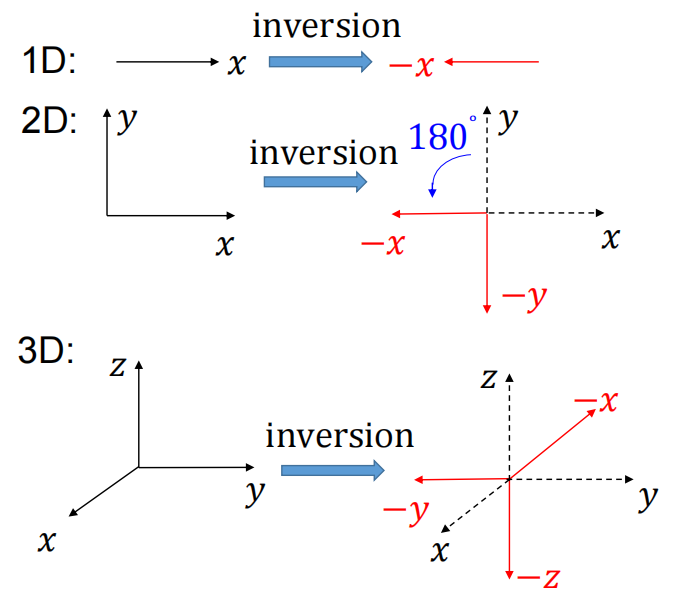
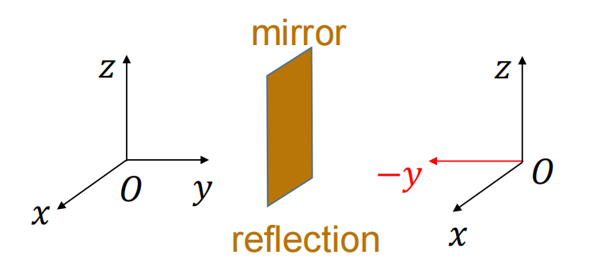

晶格平移
晶格平移是一种离散对称操作，在固体物理学中具有极其重要的应用
一维周期势
单粒子在晶格势场中的哈密顿量为
H=2mp2+V(q),V(q+a)=V(q)
定义平移算符 T(na)=e−ℏip(na)，其对势能的作用为
T†(na)V(q)T(na)=eℏip(na)V(q)e−ℏip(na)=V(q+na)=V(q)
因此有
[T(na),V(q)]=0⇒[T(na),H]=0
这说明H 和 T(na) 可以同时对角化。又因为 T(na) 是幺正算符，其本征值的模为 1，那么就可以设其本征值的形式为 t(na)=eiθ(na)，其中 θ 为 na 的函数。
定义 ∣m⟩ 为粒子局域在第 m 个格点上的态
那么有
T(na)∣m⟩=∣m+n⟩
这说明局域态 {m} 不是 T(na) 的本征态。
H和T(na)的共同本征态
我们做紧束缚近似：将单体问题形象地看成是粒子跳跃问题，即粒子只能在相邻的格点间跳跃。设粒子在第 j 个格点的能量为 ε0，在相邻格点间跳跃的能量为 −J，则哈密顿量可写成
H=ε0j=−∞∑∞∣j⟩⟨j∣−Jj=−∞∑∞(∣j⟩⟨j+1∣+∣j+1⟩⟨j∣),J>0
式中第一项为在位能，第二项为最近邻粒子跃迁强度，粒子只能在相邻格点间跳跃。我们现在考虑还是无穷长的晶格，所以具有平移不变性 T†(na)HT(na)=H，若是有限长晶格则不具有平移不变性。
现将紧束缚的哈密顿量作用在 ∣n⟩ 态上，有
H∣n⟩=ε0j∑∣j⟩⟨j∣n⟩−Jj∑(∣j⟩⟨j+1∣n⟩+∣j+1⟩⟨j∣n⟩)=ε0j∑∣j⟩δjn−Jj∑(∣j⟩δj+1,n+∣j+1⟩δjn)=ε0∣n⟩−J(∣n−1⟩+∣n+1⟩)
所以 ∣n⟩ 也不是 H 的本征态。但我们要的是 H 和 T(na) 的共同本征态，怎么办？线性展开！
构建所有局域态的线性组合
∣k⟩=n=−∞∑∞Cn(k)∣n⟩
其中 k 是波矢，用于标记一个特定的本征态。我们刚刚已经提到要求
H∣k⟩=Ek∣k⟩T(a)∣k⟩=eiθk(a)∣k⟩
利用 H 和 T(a) 作用在 ∣n⟩ 上的结果，经过整理可以分别得到 Cn(k) 需满足的条件为
ε0Cn(k)−J[Cn+1(k)+Cn−1(k)]=EkCn(k)
Cn−1(k)=eiθk(a)Cn(k)
上两式中第二式的解显然是
Cn(k)=Ae−inθk(a)
我们要求 θk(a) 是无量纲的，那么最简单的选择就是 θk(a)=ka，其中 k 为波数。再结合第一个方程，可以得到能谱为
Ek=ε0−J(e−ika+eika)=ε0−2Jcoska
-
本征态 ∣k⟩ 是局域态 {∣j⟩} 的傅里叶变换，称为布洛赫态，由波数 k 标记。
-
这就相当于从局域态的表象经幺正变换到能量本征态的表象，又因为希尔伯特空间的维数不因表象变换而变化，所以 k 也是连续变量，理论上可以取任意实数值，但是由于 k 出现在 coska 中，本征能量连续分布在 ε0−2J 到 ε0+2J 之间，所以 k 没必要取全部实数值，这就是布里渊区的概念
-
k 通常取在 [−aπ,aπ) 范围内，称为第一布里渊区。
能谱的宽度正比于 J，当 J=0 时，晶格势垒变得无限高，粒子不会跳跃，哈密顿量只剩下在位能
H0=ε0j=−∞∑∞∣j⟩⟨j∣,H0∣j⟩=ε0∣j⟩
每一个局域态都是能量本征态，本征能量为在位能，此时本征态为无穷维简并。
最近邻跃迁 J 解除了无穷重简并，形成了一个连续的能带。
J=0 时的坐标表象下的 m 和能量表象下的 k 态的本征能量虽然都是 ε0，但它们并不相同，前者是局域态，后者是完全波动的布洛赫态。
布洛赫定理
布洛赫态 ∣k⟩ 的波函数为：⟨q′∣k⟩=A∑ne−ikna⟨q′∣n⟩
替换为 q′+a 仍然成立：⟨q′+a∣k⟩=A∑ne−ikna⟨q′+a∣n⟩
又因为 Wannier function，∣n⟩ 在 q′+ma 处的波函数和 ∣n−m⟩ 在 q′ 处的波函数相同，从数学上来讲就是
⟨q′+ma∣n⟩=⟨q′∣T†(ma)∣n⟩=⟨q′∣T(−ma)∣n⟩=⟨q′∣n−m⟩
那么有
⟨q′+a∣k⟩=An∑e−ikna⟨q′∣n−1⟩=An∑e−ik(n+1)a⟨q′∣n⟩=e−ikaAn∑e−ikna⟨q′∣n⟩=e−ika⟨q′∣k⟩
再在上式两边同时乘以 eik(q′+a)，得到
eik(q′+a)⟨q′+a∣k⟩=eik(q′+a)e−ika⟨q′∣k⟩=eikq′⟨q′∣k⟩
上两式对比说明，布洛赫态的波函数满足本是不满足周期性，但是当布洛赫态乘以因子 eikq 后就满足周期性，所以我们定义
uk(q′)≡eikq′⟨q′∣k⟩，则有
uk(q′)=uk(q′+a)
那么波函数 ⟨q′∣k⟩≡ψk(q′) 有以下形式
ψk(q′)=e−ikq′uk(q′)
这就是著名的布洛赫定理。
环上的有限尺寸问题
不止无限长晶格有平移对称性，有限长晶格在首尾相连成环后也有平移对称性。
我们取有限个格点 N 个，首尾相连成环
H=ε0j=1∑N∣j⟩⟨j∣−Jj=1∑N(∣j⟩⟨j+1∣+Н.с.),J>0
其中为简单起见假设 N 为偶整数。指标 j 从 1 取到 N，因为假设世界是一个长度为 N 的环，使得第 (N+m) 个点就是第 m 个点，也就是说满足周期性边界条件
TN(a)∣m⟩=∣N+m⟩=∣m⟩
可以证明，环上的有限元系统仍然满足平移不变性
T†(a)HT(a)=H
其布洛赫态的构造与无限长晶格类似，只能取到 N，这时可以进行归一化
∣k⟩≡N1Σn=1Ne−ikna∣n⟩
我们还是要求 ∣k⟩ 是 平移算符 T 的本征态，但此时这一要求就会导致 k 只能取离散值
T(a)∣k⟩=T(a)N1n=1∑Ne−ikna∣n⟩=N1n=1∑Ne−ikna∣n+1⟩=N1n=2∑N+1e−ik(n−1)a∣n⟩=N1n=2∑Ne−ik(n−1)a∣n⟩+N1e−ikNa∣N+1⟩=eikaN1n=2∑Ne−ikna∣n⟩+N1e−ikNa∣1⟩
又由于
T(a)∣k⟩=eika∣k⟩=eikaN1n=2∑Ne−ikna∣n⟩+eikaN1e−ika∣1⟩
对比上两式得到
e−ikNa=1⟹k=Na2πm,m∈Z
也就是说 k 只能取离散值，但我们可以将 k 限制在第一布里渊区内
k∈KN=even={−aπ,−aπ+Na2π,⋯,−Na2π,0,Na2π,⋯,aπ−Na2π}≡{k1,k2,⋯,kN}
kα≡−aπ+Na2(α−1)π
因为有限情况下态的个数是有限的，所以 k 的个数也应是有限的。
这里给出两个有用的等式
-
k 空间正交性：
⟨kα∣kβ⟩=N1n=1∑Nei(kα−kβ)na=δαβ,α,β=1,...,N
-
实空间正交性：（n,m 表示格点编号）
N1α=1∑Neikα(n−m)a=δnm
这两个式子将会用来证明有限晶格下的哈密顿量在 k 空间的对角化，为此我们先找到布洛赫态 ∣k⟩ 到局域态 ∣n⟩ 的逆变换
∣n⟩≡N1Σα=1Neikαna∣kα⟩
k 空间和实空间的傅里叶变换
由于哈密顿量最开始是在局域态下给出的，那么我们将上式直接代入哈密顿量，先看跃迁项
j=1∑N∣j⟩⟨j+n∣=j=1∑NN1α=1∑Neikαja∣kα⟩N1β=1∑Ne−ikβ(j+n)a⟨kβ∣=α,β∑e−ikβna[N1j=1∑Nei(kα−kβ)ja]∣kα⟩⟨kβ∣=α,β∑e−ikβnaδαβ∣kα⟩⟨kβ∣=α∑e−ikαna∣kα⟩⟨kα∣
上式将跃迁项 ∑∣j⟩⟨j+n∣ 变换到 k 空间，且是对角的。利用上式直接计算紧束缚模型的哈密顿量
H=ε0j=1∑N∣j⟩⟨j∣−Jj=1∑N(∣j⟩⟨j+1∣+H.c.)=ε0α∑e−ikα⋅0⋅a∣kα⟩⟨kα∣−J(α∑e−ikα⋅1⋅a∣kα⟩⟨kα∣+H.c.)=α∑(ε0−2Jcoskαa)∣kα⟩⟨kα∣
可以看出有限尺寸晶格的哈密顿量在布洛赫态下也是对角化的，其本征能量形式与无限长晶格时相同，只不过此时的 k 只能取离散值。
空间反演与宇称
空间反演
不同维度坐标的空间反演和镜像分别为
|

|

|
三维空间的反演和镜像关系为
空间反演=绕 −y^ 轴旋转 180∘×关于 x0z 平面的镜面反射
- 二维的空间反演不改变坐标轴的手性，而三维的空间反演会改变坐标轴的手性。
- 镜像操作会改变坐标轴的手性
- 相同的手性可通过旋转联系起来
我们来看一个反直觉的事实：电流方向在空间反演下不改变，而在镜像下改变，这和我们对矢量的理解是相反的，下面我们将会讲到磁场不是真正的矢量。
磁场：由电流（或运动电荷）产生 ⇒ 在空间反演下不变。
极矢量：在空间反演下变号的矢量（例如 x,p,E）。
轴矢量：在空间反演下不变号的矢量（例如 S,L,x×p,B）。
赝标量：在旋转下不变但在空间反演下变号的量，由轴矢量和极矢量的乘积组合而成（例如 E⋅B 或 S⋅P）。
量子力学中的空间反演
在量子力学中，空间反演是通过一个酉算符 π，称为宇称算符来实现的，此时 π 不是圆周率而是一个算符。对于给定态 ∣ψ⟩，空间反演态是 π∣ψ⟩。
在量子力学中我们无法得到其确定的坐标，但是可以谈论其平均值，我们要求平均值在空间反演下变号：
(⟨ψ∣π†)x(π∣ψ⟩)=−⟨ψ∣x∣ψ⟩⟹π†xπ=−x
π 是幺正的，那么 π−1=π†⟹π−1xπ=−x⟹ {π,x}=0，即宇称算符与位置算符反对易。
连续两次空间反演完全不产生变化：ππ∣ψ⟩=eiθ∣ψ⟩。为方便起见通常选取 θ=0，即 π=π−1。因此，π 既是幺正的也是厄米的：π=π−1=π†。既然 π2=1，那么算符 π 就满足一个代数方程，其本征值只能是 +1 或 −1。
π∣x′⟩ 是 x 的本征值为 −x′ 的本征态，因此 π∣x′⟩=eiθ∣−x′⟩，再次按惯例选取 θ=0，我们得到 π∣x′⟩=∣−x′⟩。
我们考虑 π 算符对波函数的作用。令 π^ 为 π 在 x 基底下的表示：⟨x′∣π∣ψ⟩=π^⟨x′∣ψ⟩=π^ψ(x′)，由 π 的厄米性 ⟨x′∣π=⟨−x′∣
⟨x′∣π∣ψ⟩=⟨−x′∣ψ⟩=ψ(−x′)
因此 π 对波函数的作用就是改变坐标的符号
π^ψ(x′)=ψ(−x′)
所有 x′ 的偶（奇）函数都是 π^ 的本征函数，其本征值为 ±1：
π^ψe/o(x′)=±ψe/o(x′)
假设有两个态 ∣ϕ+⟩ 和 ∣ϕ−⟩，分别是 π 的两个本征态 π∣ϕ±⟩=±∣ϕ±⟩，于是
⟨x′∣π∣ϕ±⟩=±⟨x′∣ϕ±⟩⟹ϕ±(−x′)=±ϕ±(x′)
这意味着本征值为 1 的态的波函数是偶函数，而本征值为 −1 的态的波函数是奇函数。偶（奇）波函数或其对应的态被称为具有宇称 +1(−1)，或称为偶（奇）宇称。
本征值为 ±1 的态 ⟺ 偶（奇）宇称态
可以证明 π 对动量算符的作用同样为
π†pπ=−p
那么角动量 L=x×p 在 π 作用是不变的： π†Lπ=L，我们希望相应的自旋角动量 S 也不变号 π†Sπ=S，因此总角动量 J=L+S 也不变号 π†Jπ=J。
可以证明平移算符和宇称算符不对易，而转动算符和宇称算符对易。
假设系统的哈密顿量在空间反演下不变，即 π†Hπ=H，且 ∣n⟩ 是 H 的一个非简并本征态，其本征值为 En：H∣n⟩=En∣n⟩，那么 ∣n⟩ 也是 π 的本征态。
对易算符具有相同的本征态
宇称不守恒
如果 [π,H]=0，那么我们就说宇称本征值 ±1 是一个守恒量。长期以来，人们一直认为自然界的基本定律在空间反演（或镜像）下是不变的，简单地说就是自然界不区分左手性和右手性。“吴氏实验”（1956）：表明自然界不遵守这种对称性。
放射性原子核 2760Co 发生 β 衰变：
2760Co→2860Ni+e−+νˉe+2γ
2760Co 原子核具有非零自旋 S 和磁矩，因此在低温下可以通过磁场使其自旋定向排列。
图中左边的情况是预期中宇称守恒的情况，在镜像世界中，电子应该更倾向于沿着自旋的正方向发射；而右边的情况是实际实验结果，电子的发射方向与原子核自旋方向存在明确的关联关系：电子始终更倾向于沿着自旋的反方向发射。这一现象表明，在 β 衰变过程中，宇称并不是守恒的。
想象一下你骑一辆自行车经过一片水洼，往车轮两边溅出的水不是一样多的，这是一个非常违背直觉的现象，人们原本认为左右是相对的、不可区分的，但是现在可以利用多少来区分了。
我们可以做定性分析：令 S 为核自旋算符，P 为电子动量算符。对于物理态 ∣ψ⟩（在实验室中），观察到 ⟨ψ∣S⋅P∣ψ⟩<0。然而，对于反演态 ∣ψ′⟩=π∣ψ⟩，我们有
⟨ψ′∣S⋅P∣ψ′⟩=⟨ψ∣π†S⋅Pπ∣ψ⟩=−⟨ψ∣S⋅P∣ψ⟩>0
现在，假设 β 衰变的哈密顿量与 π 对易 πH=Hπ，这就是宇称守恒，那么
H∣ψ⟩=E∣ψ⟩⟹Hπ∣ψ⟩=πH∣ψ⟩=Eπ∣ψ⟩⟹H∣ψ′⟩=E∣ψ′⟩
这就会导致 ∣ψ⟩ 和 ∣ψ′⟩ 要么是简并态，要么是同一个态（非简并）。但是它们又不可能是同一个态，否则 ⟨ψ∣S⋅P∣ψ⟩=⟨ψ′∣S⋅P∣ψ′⟩=0。因此，只有当 2760Co 原子核的自旋极化态是简并的，才有可能维持空间反演对称性，但是进一步的核结构理论不支持这一假设。
自发对称性破缺
假设哈密顿量 H 具有某种对称性（例如平移、转动以及空间反演对称性），而其基态在该对称性下却是变化的，我们就说对称性发生了自发破缺。
这说明基态不是该对称算符的本征态，根据定理，对称性自发破缺下的基态必然是简并的。
这个现象的经典解释如下图：若是一个单阱谐振子，基态是唯一且对称的，但若是一个双阱势，则会处于 x=−a 或 x=a，这两个互为空间反演。
成立的条件是：存在超过 1 个基态，且这些态并不具有对称不变性，而是通过对称性操作互相映射。
自发对称性破缺的量子示例为：无限势垒模型
在基底 {∣a⟩,∣−a⟩} 下，哈密顿量和宇称算符分别为
H=(E000E0)π=(0110)
由于势垒无限高，两个能级之间不会发生跃迁，哈密顿量的非对角项为零。因为 [H,π]=0，所以 H 和 π 具有共同本征态，我们构造出两个本征态为
∣S⟩=21(∣a⟩+∣−a⟩),∣A⟩=21(∣a⟩−∣−a⟩)
⟹π∣S⟩=∣S⟩,π∣A⟩=−∣A⟩
但是上式中的对称态和反对称态不是物理存在的。假设在测量过程中粒子被发现位于势垒的一侧，那么由于无限势垒的阻隔，绝无可能实现 ∣S/A⟩ 态。粒子无法感知到另一个与其自身所在环境完全一样的“平行宇宙”的存在。在此类问题中，现实物理世界将不再是对称的，且 ∣S/A⟩ 代表了无法实现的物理情形 —— 即对称性发生了自发破缺。
若是有限深势垒，那么哈密顿量中的非对角项不为零
H=(E0−V−VE0)=E0−Vσx⟹⎩⎨⎧H∣S⟩=(E0−V)∣S⟩H∣A⟩=(E0+V)∣A⟩
此时简并解除，∣S⟩ 是唯一的基态，所以有限势垒问题中不会发生自发对称性破缺，这就是通过隧穿实现的对称性恢复。
我们再来计算从 ∣a⟩ 态演化至到 ∣−a⟩ 态所需的时间。如果我们从定域态 ∣a⟩=21(∣S⟩+∣A⟩) 开始演化，那么经过时间 t 后的态为
∣ψ(t)⟩=H∣a⟩=21(e−ℏi(E0−V)t∣S⟩+e−ℏi(E0+V)t∣A⟩)=21e−ℏi(E0−V)t(∣S⟩+e−ℏi2Vt∣A⟩)
该态会以频率 ω=2V/ℏ 在 ∣a⟩ 和 ∣−a⟩ 之间来回振荡。若是势垒有限高但是又足够大，那么 V→0⇒T=2Vπℏ→∞，势垒越高，粒子从 ∣a⟩ 态隧穿到 ∣−a⟩ 态所需的时间就越长，在势垒无限高时，粒子永远无法从 ∣a⟩ 态隧穿到 ∣−a⟩ 态，从而实现了自发对称性破缺。
因此，我们观察到的宇称不对称性，例如人体心脏在左边，可以通过非对称的初始状态来解释，也就是一开始就处于 ∣−a⟩ 或 ∣a⟩ 态，而不需要用宇称不守恒来解释。
时间反演
时间反演更准确的说法应该是运动反演，但时间反演这个表述已经被广泛接受，所以我们接下来都使用时间反演这个术语。
经典力学中的时间反演
若 x(t) 是牛顿方程 mx¨(t)=−∇V(x(t)) 的解（例如钟摆），那么 x(−t) 也应是一个解：
md(−t)dd(−t)dx(−t)=−∇V(x(−t))⟹mdtddtdx(−t)=−∇V(x(−t))
若是满足上式则具有时间反演对称性。时间反演对称性破坏的两个例子：
-
引入摩擦力：mx¨(t)=−∇V(x(t))−γx˙，其中包含速度 x˙，若是将运动过程（例如钟摆运动）拍成视频，倒放和正放是可以区分的。
-
mx¨(t)=qx˙(t)×B，其中也包含速度 x˙，如下图所示，正向运动和反向运动分别代表时间向前和时间向后的过程，可以看出两个不同方向的电子会得到两个不同的轨迹，因此不存在时间反演对称性
但是如果你同时反转 B，那么 x(−t) 仍然是下列方程的一个解：
mx¨=qx˙×(−B)
我们说磁场的存在破坏了时间反演对称性，那是因为我们将磁场视为独立于所考虑物理系统的背景场。实际上，磁场是由运动电荷产生的，而时间反演下电荷会反向运动，因此磁场也会随之反向，从而恢复时间反演对称性。
量子力学中的时间反演
量子力学中的时间反演和经典中有所不同。量子中使用波函数描述状态而不是 x,p，使用算符描述力学量而不是 x,p，经典和量子之间通过平均值联系起来，量子力学的平均值应回到经典力学的结论。在这里我们要求量子力学平均值的时间反演对称性与经典力学一致。
定义时间反演态（或运动反演态）为 T∣ψ⟩。如果时间反演对称性能够保持，如下图所示，我们希望演化后的时间反演，再经过相同时间的演化，等于初始态的时间反演态
T∣ψ⟩=e−ℏiHt(Te−ℏiHt∣ψ⟩)
⟹eℏiHtT∣ψ⟩=Te−ℏiHt∣ψ⟩
由于时间 t 是任意的，我们先考虑无穷小时间微元 t=dt，则有
(1+ℏiHdt)T∣ψ⟩=T(1−ℏiHdt)∣ψ⟩
最后得到 T 需要满足的条件
iHT=−TiH
你可能会问，上式中的常数 i 为什么不能消去？不能！因为 T 不是线性算符，实际上，T 对 i 也有作用。
那么你又问了，时间反演算符 T 可以是幺正算符吗？我们可以先假设 T 是幺正算符，那么有
{HT=−THH∣n⟩=En∣n⟩
⟹HT∣n⟩=−TH∣n⟩=(−En)T∣n⟩
即反演变换态 T∣n⟩ 是 H 本征能量为 −En的本征态。但这即使在自由粒子的基本情况下也不能成立，因为我们要求能谱必须要存在下限。这说明，时间反演不是幺正算符，我们不允许消去 iHT=−TiH 中的 i。实际上，时间反演算符与共轭操作有关。
反线性算符
反线性算符 A 满足以下关系
A(c1∣ψ1⟩+c2∣ψ2⟩)=c1∗A∣ψ1⟩+c2∗A∣ψ2⟩
即对常数取复共轭。两个反线性算符的乘积是线性的
A2A1c∣ψ⟩=A2c∗A1∣ψ⟩=cA2A1∣ψ⟩
我们一般约定：反线性算符只向右作用，而不向左作用。这导致与线性算符不同，反线性算符无法像线性算符那样完美地适配狄拉克符号。
与线性算符不同，反线性操作依赖于基底的选择。例如有 A^[ci∣ψ⟩]=−c∗iA^∣ψ⟩，但是如果我们令 ∣ψ′⟩=i∣ψ⟩，那么 A^[c∣ψ′⟩]=c∗A^∣ψ′⟩=c∗iA^∣ψ⟩。因为基矢选取的不同，同样的操作得到了不同的结果。复共轭算符是最简单的反线性算符，其作用就仅是简单的取共轭，我们来看它在不同基底下的作用
-
正交归一基底集 {∣n⟩}。对于任意态 ∣ψ⟩，在该 n-基底下的复共轭算符 K(n) 定义为：
K(n)∣ψ⟩=K(n)n∑⟨n∣ψ⟩∣n⟩=n∑⟨ψ∣n⟩K(n)∣n⟩=n∑⟨ψ∣n⟩∣n⟩
其中 ∣n⟩ 应被理解为基底列向量 (0,⋯,1,⋯,0)T。由于概率幅取复共轭不影响概率，因此我们认为：
K(n)∣n⟩=∣n⟩
-
正交归一基底矢量集 {∣ν⟩}。按照第一种基底的结论，在这个 ν-基底下，复共轭算符的作用为 K(ν)∣ψ⟩=∑ν⟨ψ∣ν⟩∣ν⟩
那我又要问了：这两个不同基矢下的复共轭算符等价吗？分别作用在同一个态 ∣ψ⟩ 上
K(ν)∣ψ⟩K(n)∣ψ⟩=ν∑⟨ψ∣ν⟩∣ν⟩=ν∑⟨ψ∣ν⟩n∑⟨n∣ν⟩∣n⟩=n∑(ν∑⟨ψ∣ν⟩⟨n∣ν⟩)∣n⟩=n∑⟨ψ∣n⟩∣n⟩=n∑(ν∑⟨ψ∣ν⟩⟨ν∣n⟩)∣n⟩
只有当内积 ⟨n∣ν⟩ 对所有 n 和 ν 均为实数时，才有 K(n)=K(ν)，两组基下的复共轭算符才是等价的。
例如，考虑自旋 1/2 粒子的态 ∣↑⟩y^=21(∣↑⟩+i∣↓⟩)。
在 σz-基底下：∣↑⟩y^≐21(1i)⟹K(z)∣↑⟩y^=21(1−i)=∣↓⟩y^
在 σy-基底下：∣↑⟩y^≐(10)⟹K(y)∣↑⟩y^=(10)=∣↑⟩y^
σz 和 σy 基底下的复共轭算符不等价：
K(z)=K(y)。但是可以验证，K(x)=K(z)，因为 σx 和 σz 基底之间的变换矩阵为实数矩阵。
反幺正算符
如果算符 A 满足以下条件，则称为反幺正算符：
-
反线性
-
存在逆算符 A−1
-
不改变作用前后态的模：对于任意 ∣ψ⟩，∣∣∣ψ⟩∣∣=∣∣A∣ψ⟩∣∣。
我们可以证明，一个反幺正算符 A 总是可以写为一个幺正算符和复共轭算符的乘积：
A=UK
由于复共轭算符 K 是依赖于基底的，因此反幺正算符 A 也是依赖于基底的。
我们已经约定反线性算符只向右作用，而不向左作用，那么若是真出现向左作用的情况该怎么办呢？
假设 A 是一个反幺正算符，而 L 是一个线性算符。定义 ∣ψ′⟩≡A∣ψ⟩ 和 ∣ϕ′⟩≡A∣ϕ⟩，那么有
⟨ψ∣L∣ϕ⟩=⟨ϕ′∣AL†A−1∣ψ′⟩
每当我们遇到复共轭算符时，我们总是选取某个基展开得到系数，就能消去复共轭算符，从而进行常规计算；而左矢则需要先行展开计算，再代入矩阵元计算式。
推论：令 L=1，我们得到：
⟨ψ∣ϕ⟩=⟨ϕ′∣ψ′⟩=⟨ψ′∣ϕ′⟩∗
这表明，两个时间反演前后态的内积是相互共轭的。
若 F 是厄米算符，则：
⟨ψ∣F∣ϕ⟩=⟨ϕ′∣AFA−1∣ψ′⟩⟹⟨ψ∣F∣ψ⟩=⟨ψ′∣AFA−1∣ψ′⟩
时间反演算符是反幺正的
在介绍反线性和反幺正算符后，我们就可以确定时间反演算符的性质了。我们知道，若是变换前后态的模不变，那么这个变换只能是幺正的或反幺正的。
如前所述，我们假定 T 是一个反幺正算符是合理的。因为平均值与经典相联系，所以对于时间反演态 ∣ψ′⟩=T∣ψ⟩，我们预期动量期望值会反号（也就是运动反演）⟨ψ′∣p∣ψ′⟩=−⟨ψ∣p∣ψ⟩。利用前述结论 ⟨ψ∣F∣ψ⟩=⟨ψ′∣AFA−1∣ψ′⟩，我们得到：
−⟨ψ′∣p∣ψ′⟩=⟨ψ∣p∣ψ⟩=⟨ψ′∣TpT−1∣ψ′⟩
对比得到
TpT−1=−p
同理，位置算符 x 在时间反演下应当保持不变，由此可导出轨道角动量 L 的变换性质：
TxT−1=x⟹TLT−1=−L
对于自旋 S 和总角动量 J，我们同样希望他们与轨道角动量具有相同的变换性质：
TST−1=−S,TJT−1=−J
现在考察对易关系 [xj,pj]=iℏ 在时间反演下的变换：
TiℏT−1=T[xj,pj]T−1=TxjT−1TpjT−1−TpjT−1TxjT−1=xj(−pj)−(−pj)xj=−[xj,pj]=−iℏ⟹TiT−1=−i
所以为了满足理论的自洽性，T 必须是一个反线性算符。
薛定谔方程的时间反演
我们之前提到过，t 在量子力学中仅仅是一个参数，其不能被算符直接影响，在薛定谔方程两边同时作用时间反演算符 T
T[iℏ∂t∣ψ(t)⟩]=T[H∣ψ(t)⟩]⟹−iℏ∂tT∣ψ(t)⟩=THT−1T∣ψ(t)⟩
假设 H 在时间反演下是不变的，即 THT−1=H，则有
−iℏ∂tT∣ψ(t)⟩=HT∣ψ(t)⟩t→−tiℏ∂tT∣ψ(−t)⟩=HT∣ψ(−t)⟩
上式说明 T∣ψ(−t)⟩ 也是原来薛定谔方程的一个解，我们称该系统具有时间反演对称性。一般来说，对称性对应守恒量，但是哈密顿量 H 在反线性时间反演变换下的不变性并不对应任何守恒量。因为哈密顿量的守恒来自于时间平移不变性，且时间反演算符并非厄米的。
取而代之的是，[T,H]=0 说明薛定谔方程的解是成对出现的，即 ∣ψ(t)⟩ 和 T∣ψ(−t)⟩。坐标基底下的薛定谔方程：
iℏ∂tψ(x′,t)=[−2mℏ2∇2+V(x′)]ψ(x′,t)
取复共轭（时间反演）
−iℏ∂tψ∗(x′,t)=[−2mℏ2∇2+V∗(x′)]ψ∗(x′,t)
取 t→−t，那么有
iℏ∂tψ∗(x′,−t)=[−2mℏ2∇2+V∗(x′)]ψ∗(x′,−t)
如果 V∗(x′)=V(x′)，那么 ψ∗(x′,−t) 也是原薛定谔方程的解。注意这里的 −t 只是相对于原时间参数 t 的一个符号变化，表示反向演化，但是 ψ∗(x′,−t) 中的每个时刻和对应 ψ∗(x′,t) 中的时刻遵循同样的物理规律。
以波包为例，时间反演算符的作用就是将波包的动量反向，也就是改变运动方向
在不考虑自旋的情况下，我们可以将坐标表象下的时间反演算符 T^ 等同于复共轭算符 K0：T^=K0，即 T^ψ(x,t)=ψ∗(x,t)。
这一点也可以通过以下事实得到印证：
-
动量算符在坐标表象下为 p^=−iℏ∇，复共轭操作会改变其符号，因此 T^p^T^−1=−p^。
-
磁场会破坏时间反演对称性，因为 −μL⋅B∝−L^⋅B 在时间反演下会变化
我们可以证明 T∣x′⟩=∣x′⟩ 和 T∣p′⟩=∣−p′⟩。这与我们的经典认识相符。
若 [T,H]=0 且本征态 ∣n⟩ 是非简并的，则波函数 ⟨x′∣n⟩ 必为实函数和一个与 x′ 无关的相位因子之积
时间反演的平方
连续两次施加时间反演变换应当使物理情形保持不变，即：
T2∣ψ⟩=eiθ∣ψ⟩
那么我们如何确定相位因子 eiθ 的可能取值？
方法 1：首先考察三次时间反演操作
T3∣ψ⟩=TT2∣ψ⟩=Teiθ∣ψ⟩=e−iθT∣ψ⟩
上式利用了 T 的反线性性质，将复数常数移出时取了共轭。现在考虑叠加态 ∣ψ⟩+T∣ψ⟩。对于这个态，施加 T2 也应产生一个（可能不同的）相位因子 eiθ′：
T2(∣ψ⟩+T∣ψ⟩)=eiθ′(∣ψ⟩+T∣ψ⟩)
将两边展开
T2∣ψ⟩+T3∣ψ⟩=eiθ∣ψ⟩+e−iθT∣ψ⟩
比较左右两边的系数：
eiθ∣ψ⟩+e−iθT∣ψ⟩=eiθ′∣ψ⟩+eiθ′T∣ψ⟩
⟹eiθ=eiθ′=e−iθ⟹e2iθ=1⟹eiθ=±1
所以有
T2∣ψ⟩=±∣ψ⟩
尽管连续两次时间反演操作看似是一个平凡变换，但其对应的算符 T2 并不一定是恒等算符。
我们还可以利用作用两次时间反演算符但取具体表象的方法
方法 2：我们在某个特定基底（例如 n-基底）下考察方程 T2∣ψ⟩=eiθ∣ψ⟩
T2∣ψ⟩=U(n)K(n)U(n)K(n)n∑⟨n∣ψ⟩∣n⟩
其中 ∣n⟩=(0,⋯,1,⋯,0)T，且 U(n) 为幺正矩阵。于是有：
T2∣ψ⟩=U(n)K(n)U(n)n∑⟨ψ∣n⟩∣n⟩=U(n)U(n)∗K(n)n∑⟨ψ∣n⟩∣n⟩=U(n)U(n)∗n∑⟨n∣ψ⟩∣n⟩=U(n)U(n)∗∣ψ⟩
由此可知 U(n)U(n)∗=eiθ1=eiθU(n)U(n)†。消去左侧的 U(n) 可得：
U(n)∗=eiθU(n)†取复共轭U(n)=e−iθU(n)T取转置U(n)T=e−iθU(n)
将 U(n) 的表达式代回
U(n)T=e−iθ(e−iθU(n)T)=e−2iθU(n)T
⟹e−2iθ=1⟹eiθ=±1
因此 U(n) 是对称或者反对称矩阵
U(n)=±U(n)T
分别对应于 T2∣ψ⟩=±∣ψ⟩]。
时间反演和自旋
自旋下的时间反演算符
两次时间反演变换并不一定是个恒等算符，我们允许其具有相位因子 −1，那么这个因子什么时候会出现呢？就是自旋存在时。
一般来说，对于轨道变量选用坐标表象，而对于自旋算符则选用标准 Sz 基底。那么在这两个表象下，时间反演算符 T 可以直接等同于复共轭算符 K0 吗？
我们在标准基底下考察泡利矩阵的性质（Sy 为纯虚矩阵，Sx,Sz 为实矩阵）
K0SyK0=Sy∗K0K0=−Sy,K0SxK0=Sx∗K0K0=Sx,K0SzK0=Sz∗K0K0=Sz
显然，仅用 K0 无法满足时间反演对自旋的要求 TST−1（即所有分量都应反号）。由于 T=UK0，为了得到正确的变换性质 TST−1=−S，我们要凑出幺正算符 U，其必须具有以下作用：
−Sy−Sx−Sz=UK0SyK0U†=UK0SxK0U†=UK0SzK0U†=USy∗K0K0U†=USx∗K0K0U†=USz∗K0K0U†=−USyU†=USxU†=USzU†
观察上述方程可知，U 算符的作用是翻转 Sx 和 Sz 的符号，同时保持 Sy 不变。这就对应于自旋空间中绕 y 轴旋转 π 角度的转动
U=e−ℏiSyπ
因此，包含自旋的时间反演算符专门选定 y 方向的转动
T=e−ℏiSyπK0
值得注意的是，在此基底下矩阵 U=e−ℏiSyπ 是实正交矩阵，即满足 U†=UT
对于 S=1/2 的情形，我们有：
T(αβ)=e−2iσyπK0(αβ)=(cos2π−iσysin2π)(α∗β∗)=−iσy(α∗β∗)=(01−10)(α∗β∗)=(−β∗α∗)
于是时间反演的平方 T2 为
T2=e−ℏiSyπK0e−ℏiSyπK0=e−ℏiSyπe−ℏiSyπK0K0=e−ℏiSy2π
这里利用了 e−ℏiSyπ 是实矩阵，且考虑到轨道部分的贡献 e−ℏiLy2π=1，最终得到：
T2=e−ℏiJy2π
T2 等价于绕 y 轴旋转一整周的旋转算符
T2=⎩⎨⎧1−1对于整数j 的任意态对于半奇整数j 的任意态
由此可推导幺正算符 U 的性质：
对于 S= 整数：e−ℏiSy2π=1⟹e−ℏiSyπ=eℏiSyπ⟹U=U†=UT；
对于 S= 半奇整数：e−ℏiSy2π=−1⟹e−ℏiSyπ=−eℏiSyπ⟹U=−U†=−UT。
总结以上两点，可以得到通式：
e−ℏiSyπ=(−1)2SeℏiSyπ
自旋的时间反演实例
小 d 矩阵就是绕 y 轴转动的生成元，我们来考察 Wigner d-矩阵在 β=π（即绕 y 轴旋转 180∘）时的具体数值。对于自旋 j=1/2：
d(1/2)(β)=cos2βsin2β−sin2βcos2β⟹d(1/2)(π)=(01−10)
这正是我们之前推导出的幺正算符 U 的形式。对于自旋 j=1：
d(1)(β)=21(1+cosβ)2sinβ21(1−cosβ)−2sinβcosβ2sinβ21(1−cosβ)−2sinβ21(1+cosβ)⟹d(1)(π)=0010−10100
由此可见，一般规律为 dm′m(j)(π)∝δm′,−m，即该旋转操作将磁量子数 m 翻转为 −m。
N 粒子系统的时间反演
考虑一个由 N 个粒子组成的系统，若粒子均为零自旋，则对任意粒子数 N，均有 T2=1。若粒子均为自旋 1/2，系统的时间反演算符是各个粒子时间反演算符的直积：
T=e−ℏiS1yπK0⊗e−ℏiS2yπK0⊗⋯⊗e−ℏiSNyπK0
由于每个费米子贡献一个 −1 因子（即 Ti2=−1），总的效果为
T2=(−1)⊗(−1)⊗⋯⊗(−1)=(−1)N
这表明，当 N 为偶数时，T2=1（表现类似玻色子）；当 N 为奇数时，T2=−1（表现类似费米子）。
克莱默定理：如果一个由奇数个自旋 1/2 粒子组成的系统，其哈密顿量在时间反演下保持不变，那么它的所有定态都是简并的。
证明：设 ∣E,N⟩ 为哈密顿量 H 的本征态，本征值为 E
H∣E,N⟩=E∣E,N⟩
由于系统具有时间反演不变性 TH=HT，我们有
HT∣E,N⟩=TH∣E,N⟩=ET∣E,N⟩
这表明 T∣E,N⟩ 也是 H 的本征态，且能量同样为 E。假设 ∣E,N⟩ 是非简并的，则 T∣E,N⟩ 必定与 ∣E,N⟩ 共线（仅相差一个相位因子）：
T∣E,N⟩=eiθ∣E,N⟩
对该式再次作用 T：
T2∣E,N⟩=T(eiθ∣E,N⟩)=e−iθT∣E,N⟩=e−iθeiθ∣E,N⟩=∣E,N⟩
然而，对于奇数个自旋 1/2 粒子（N 为奇数），我们已知 T2=−1，即应有 T2∣E,N⟩=−∣E,N⟩。这与上述推导矛盾，因此原假设错误，∣E,N⟩ 必定是简并的。
一般的简并都是由于系统的对称性引起的，而克莱默定理表明，时间反演对称也能造成简并。对于处于非对称电场中且存在自旋-轨道耦合 (L⋅S) 的系统，该定理并非平凡结论。在这种奇数个粒子的系统中，自旋和轨道角动量均不守恒。克莱默定理指出，因为电场附加能也具有时间反演对称性，所以纯电场无法消除克莱默简并。但是外部磁场可以打破这种简并，因为磁场与磁矩耦合，在哈密顿量中引入了形如 γS⋅B 的项，而该项不具有时间反演不变性。